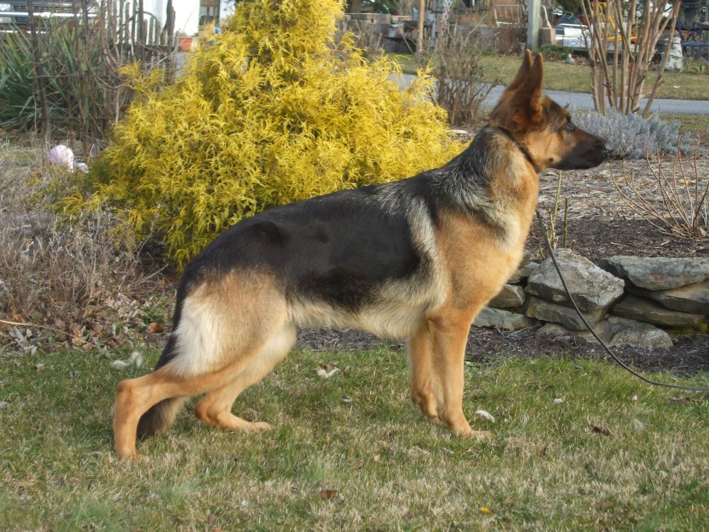
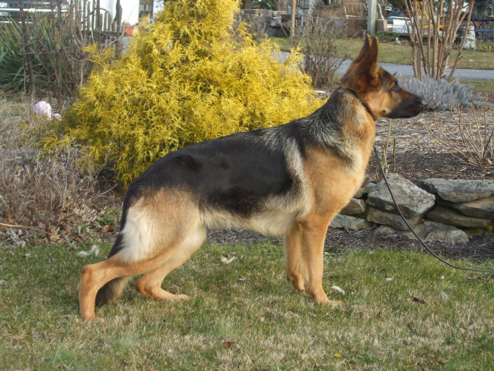

Ester
Nicklaus Essence of Armani
Dam:Nicklaus' Little Miss Sunshine
Sire:Armani Vom Finkenweg
(German import)
Ester is a full sister to our Riker. A deep, deep red and black, she looks every bit her half West German lineage. Sired by the incomparable: Am. Champion, V-rated, Armani Vom Finkenweg SchH1, 1a, OFA excellent.
Ester is a sweetheart; soft and gentle with her family and friends, but take her out to play and you can see that intelligence and trainability turn on. Great bone, great movement. We have high hopes for her.
OFA good hips and normal elbows and DNA-cleared of degenerative myelopathy (DM).
Our Girls
 
